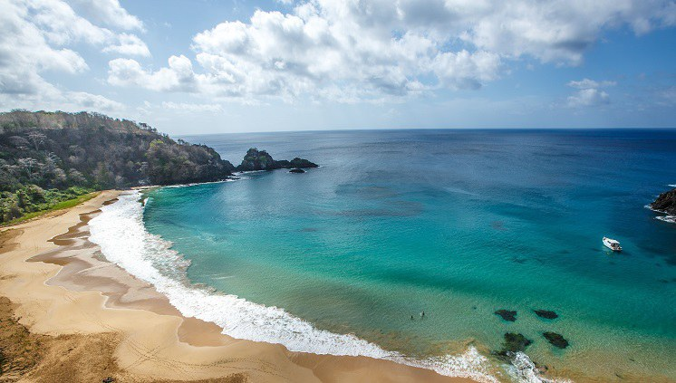
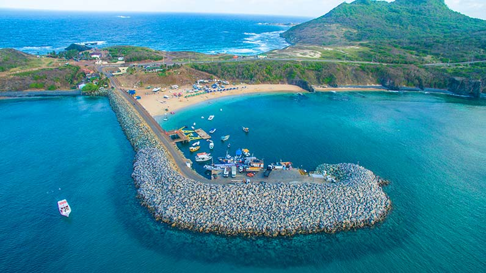

Fernando de Noronha é um arquipélago brasileiro do estado de Pernambuco.
Formado por 21 ilhas, ilhotas e rochedos de origem vulcânica, ocupa uma área total de 26 km² — dos quais 17 km² são da ilha principal — e se situa no Oceano Atlântico a nordeste do Brasil continental, distando 545 km da capital pernambucana, Recife, e 360 km de Natal no Rio Grande do Norte.
O centro comercial da ilha é o núcleo urbano de Vila dos Remédios. A administração do Parque Nacional está atualmente a cargo do Instituto Chico Mendes de Conservação da Biodiversidade (ICMBio).
Fonte: